理解 Batch Normalization 层中反向传播的原理
Table of Contents
本文翻译自 Understanding the backward pass through Batch Normalization Layer 。
Batch Normalization
我们先来看看 Batch Normalization 算法：
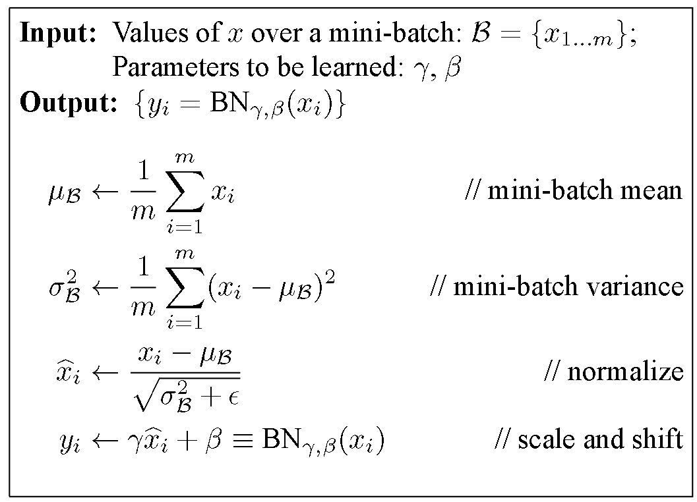
Figure 1: 批量标准化算法
观察算法的最后一行，在对 x 进行标准化之后，又将 x 带入到一个线性函数中，其中 \(\gamma\) 和 \beta 是 BatchNorm 层中可学习的参数，它所代表的意义类似于：“我不想要均值为 0 方差为 1 的输入，我想要原始的输入，那个数据对我才有用”。如果 gamma=sqrt(var(x)) ， beta=mean(x) ，那么存储的数剧为原始数据。因此，在初始化时将输入初始化为均值为 0 ，标准差为 1 的分布，而在训练过程中，通过学习参数 gamma 和 beta 来让输入的分布更合理。如果你想了解更多关于 BatchNorm 的知识，可以去研究这篇 paper 。
反向传播
这篇文章中，我并不想阐述反向传播和随机梯度下降的基本内容，我会假设读这篇文章的人已经懂了上诉两个知识点。对于那些没有懂的，我在这里引依据维基百科的定义：
反向传播（BackPropagation）是“Backward propagation of errors”的缩写，是训练神经网络的一种常见方法。该方法计算损失函数相对于网络所有权重的梯度，然后相应的优化算法利用梯度来更新权重。
Batch Normalization 层的计算图
计算图是将复杂公式可视化的一种很好的方法。BatchNorm 层的计算图如下所示：
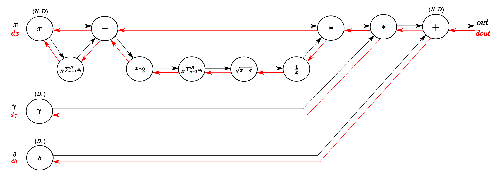
Figure 2: Batch Normalization 计算图。黑色箭头是前向传播，红色箭头是反向传播。
可以对照上面 BatchNorm 算法的计算过程理解计算图。
简单实现：
def batchnorm_forward(x, gamma, beta, eps): N, D = x.shape #step1: calculate mean mu = 1./N * np.sum(x, axis = 0) #step2: subtract mean vector of every trainings example xmu = x - mu #step3: following the lower branch - calculation denominator sq = xmu ** 2 #step4: calculate variance var = 1./N * np.sum(sq, axis = 0) #step5: add eps for numerical stability, then sqrt sqrtvar = np.sqrt(var + eps) #step6: invert sqrtwar ivar = 1./sqrtvar #step7: execute normalization xhat = xmu * ivar #step8: Nor the two transformation steps gammax = gamma * xhat #step9 out = gammax + beta #store intermediate cache = (xhat,gamma,xmu,ivar,sqrtvar,var,eps) return out, cache
cache 中存了每一步的输出结果。
BarchNorm 层中的反向传播
我们根据计算图，从后往前，逐步分析反向传播：
step 9
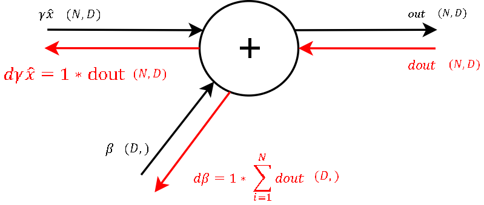
Figure 3: 最后一步求和计算
对于求和运算， f = x + y ， f 对 x 和 y 的导数都是 1。通过这一步，我们可以得到输出对 beta 的梯度。
step 8
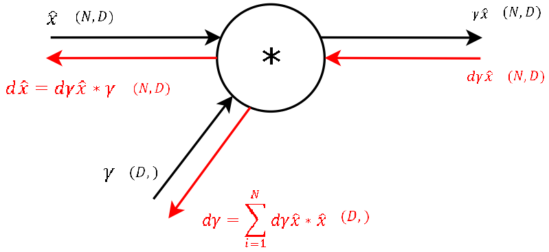
Figure 4: 标准化结果和 \(\gamma\) 相乘
对于乘法运算， f = x * y ，=f= 对 x 的导数为 y ，对 y 的导数为 x 。利用链式求导和之前前向传播存储的每步输出，可以求得 gamma 的梯度。
step 7
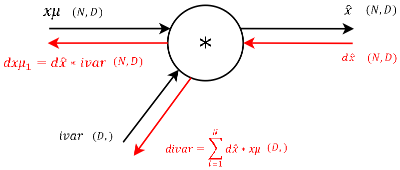
Figure 5: 计算标准化结果的最后一步
step 6
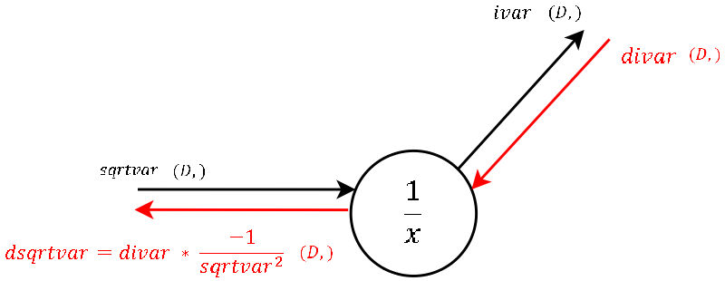
Figure 6: 一输入一输出节点
step 5
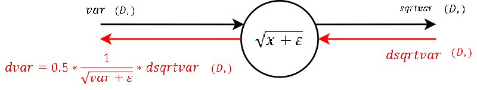
Figure 7: 一输入一输出节点 矩阵运算
step 4
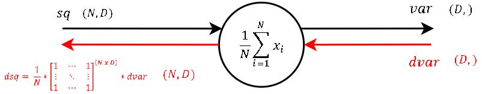
Figure 8: 一输入一输出节点
step 3
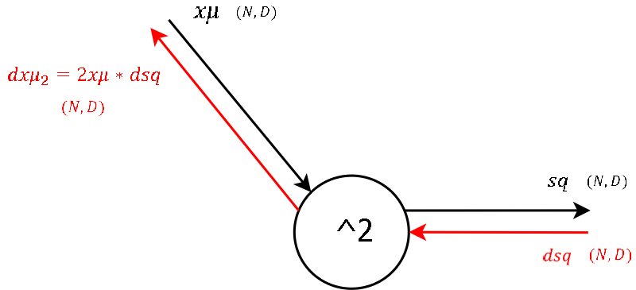
Figure 9: 一输入一输出节点
step 2
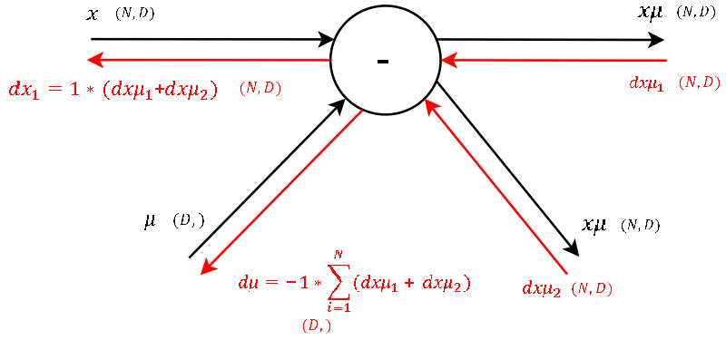
Figure 10: 两个输出，其梯度需要相加
step 1
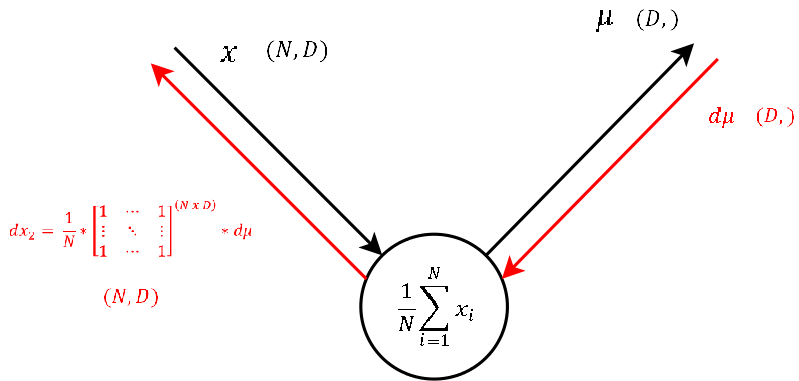
Figure 11: 一输入一输出
step 0
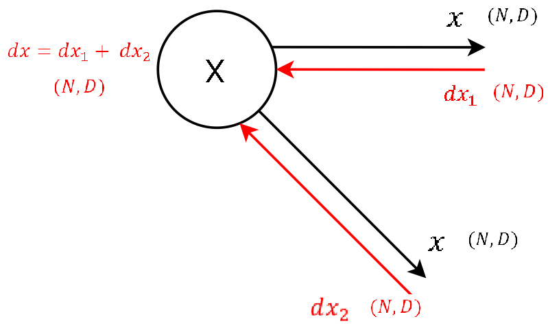
Figure 12: 两个输出